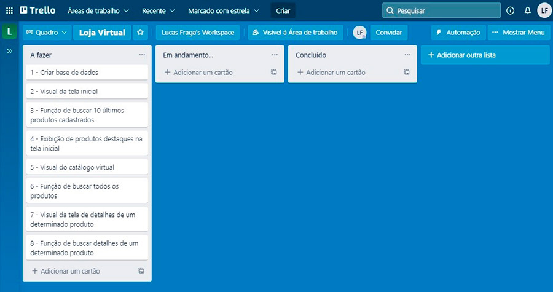

Como sugestão, configure a opção de leitura de caracteres e de pontuação de seu leitor de tela para o grau máximo de leitura, para que os códigos disponibilizados neste material sejam lidos corretamente. No caso do NVDA (Nonvisual Desktop Access), para localizar a opção Grau de pontuação/símbolos, acesse Preferências – Configurações – Fala. Altere o padrão Pouco para Tudo. Dessa forma, você passará a ler os segmentos de código em sua totalidade.
A gestão de projetos tem o objetivo de organizar todas as atividades nas quais o seu time está operando. Com essa gestão, é primordial que a equipe consiga garantir a entrega de resultados e o cumprimento de metas. É por isso que a gestão de tarefas é tão essencial, pois permite o acompanhamento de cada etapa do processo e a divisão justa de responsabilidades, considerando a capacidade de cada membro da equipe; auxilia na otimização da produtividade e promove o trabalho em equipe na execução dos projetos.
Mas nem sempre esses objetivos são alcançados, já que, quanto mais complexo for o projeto, mais difícil a gestão se torna. Integrantes que não sabem o que fazer, tarefas desorganizadas, entregas atrasadas, jornadas de trabalho mais longas, essas são apenas algumas das consequências que podem ocorrer caso haja uma perda de controle na gestão de um projeto. É aqui que entram as ferramentas de apoio a projetos de software.
A rotina de uma equipe que trabalha com projetos de software é muito corrida e requer o controle de uma quantidade considerável de informações para que tudo ocorra como esperado.
Para realizar esse controle, é muito comum a procura por ferramentas como quadros, papel, caneta e Post-Its para mapear e gerenciar o andamento de um projeto. Porém, esses recursos são muitas vezes ineficazes, já que precisam ocupar um lugar físico e nem sempre todos os integrantes têm acesso a esse local. Além disso, ainda há os gastos com a compra de materiais, os papéis são facilmente perdidos e, com frequência, essa abordagem acaba comprometendo o andamento do projeto. Por isso, um software de gestão de projetos é uma ferramenta tão recorrida por gestores de projetos, pois elas ajudam a centralizar, organizar e acessar todas as informações de um projeto em um só lugar da melhor forma possível.
Um dos fatores que ajudam a manter a motivação dos integrantes da equipe é a possibilidade de visualizar os progressos que estão sendo alcançados no projeto por meio das tarefas executadas. Nesse sentido, um sistema de gestão de projetos pode oferecer uma visão melhor do andamento das etapas do projeto, além de outros feedbacks que são disponibilizados pelas ferramentas de gestão.
Fazer uso de uma ferramenta de gestão de projetos aumenta a produtividade da sua equipe e aperfeiçoa várias funções como prevenção de riscos e fluxo de informações, além da centralização de todas as informações indispensáveis em apenas um local. Com a centralização das informações, a comunicação entre a equipe melhora e isso também influencia positivamente na gestão de tarefas da sua equipe. Assim, cada membro da equipe passa a ter acesso às informações que são do seu interesse.
Agora que você já sabe o que são e como as ferramentas de gestão podem ajudar no seu dia a dia, chegou a hora de conhecer algumas delas.
Existem atualmente muitas ferramentas de gestão de projetos. Algumas são mais simples, outras, mais complexas. Como são muitas as opções, este conteúdo focará nas principais ferramentas voltadas para a gestão de projetos de software.
Confira a seguir a abordagem sobre as principais ferramentas de gestão de projetos:
Figura 1 – Página padrão do Trello
Fonte: <https://images.ctfassets.net/rz1oowkt5gyp/4kCNudjaBYj90CGgG7Lict/5c5cf3de6f8916d9cf82cb6fa864dc7e/TrelloTourPage_Boards_2x.png>. Acesso em: 4 nov. 2021.
Página do Trello mostrando três colunas com tarefas em cada uma delas. As tarefas são representadas por cartões com rótulo colorido, título e ícone de usuários.
Baseado em boards da metodologia Kanban, o Trello é muito intuitivo. Ele funciona como um quadro branco virtual, no qual você pode organizar suas tarefas, listas de necessidades, ideias e muito mais. Criar fluxos de atividades com o Trello é simples e leve, o que torna a ferramenta bastante agradável e prazerosa de ser usada.
Figura 2 – Página de tarefas do Jira
Fonte: <https://3kllhk1ibq34qk6sp3bhtox1-wpengine.netdna-ssl.com/wp-content/uploads/JIRA-Software-agile-board.png>. Acesso em: 4 nov. 2021.
Página principal do Jira, com um menu lateral à esquerda e, na parte principal, um quadro com três colunas e variadas tarefas, cada uma representada por um cartão com uma cor lateral indicando prioridade, um título, uma descrição e uma foto do usuário associado à tarefa.
Desenvolvido pela Atlassian, Jira Software é uma ferramenta que permite o gerenciamento de atividades, monitoramento de tarefas e acompanhamento de projetos em único lugar. Apesar de haver muitas semelhanças com a ferramenta Trello, Jira é uma ferramenta de gestão focada no desenvolvimento de software em metodologias ágeis, enquanto o Trello é uma ferramenta mais livre, na qual se pode gerenciar desde tarefas pessoais até grandes projetos. Sendo assim, os principais recursos são voltados para essa finalidade. Com fluxos de trabalho Scrum e Kanban (para mais informações, consulte o material sobre as metodologias de desenvolvimento de software desta unidade curricular), gráficos de burndown, estimativas de entrega, relatórios de sprint e muito mais, a ferramenta Jira contém tudo o que você precisa para o desenvolvimento de softwares em equipes.
Figura 3 – Tela padrão do Microsoft Project
Fonte: <https://gdm-catalog-fmapi-prod.imgix.net/ProductScreenshot/78aef075-2072-4905-a8e5-9b3defa77b74.png?auto=format&q=50&fit=fill>. Acesso em: 4 nov. 2021.
Tela do Microsoft Project, mostrando à esquerda, verticalmente, uma série de títulos de tarefas. À direita está um gráfico de Gantt representando os prazos de cada tarefa.
Desenvolvido pela Microsoft, é uma ferramenta de gestão de projetos com um grande número de recursos para facilitar o controle de tarefas, destacando-se os recursos de controle de prazos e os calendários detalhados de tarefas, permitindo ainda visualização de dados em diversas configurações e a distribuição automática de tarefas. É um dos softwares mais usados para gerenciamento de projeto, mas a sua grande quantidade de recursos pode tornar o uso da ferramenta bastante complexo.
Figura 4 – Tela de backlogs do TFS
Fonte: <https://docs.microsoft.com/pt-br/visualstudio/releasenotes/media/backlogextensionpoint-12.png>. Acesso em: 4 nov. 2021.
Página do TFS, mostrando acima um gráfico de evolução das tarefas e abaixo uma lista de tarefas cadastradas. À direita, detalhes de uma tarefa selecionada.
O Microsoft Team Foundation Server, ou simplesmente Microsoft TFS, é uma ferramenta que oferece suporte ao gerenciamento de projetos ágil e em cascata. Ela fornece um ambiente para gerenciar os requisitos de um projeto de software, apresentando fluxos de trabalho personalizados, com estados, transições, entre outros recursos. Além das funcionalidades nativas, a ferramenta também pode ser integrada a outros softwares como PowerPoint, Excel, Microsoft Project, Git, entre outros.
Pesquise na web, utilizando seu buscador de preferência, cada uma dessas ferramentas e conheça mais sobre elas. Tente encontrar ainda outras ferramentas semelhantes.
Agora que você já sabe como funciona a gestão de projetos de software e quais as principais ferramentas que podem ajudá-lo nessa tarefa, observe uma abordagem mais prática para a aplicação de todos esses conceitos. Para isso, será utilizada a ferramenta Trello. A ferramenta é gratuita e pode ser acessada diretamente pelo seu navegador de Internet. Caso tenha interesse, o Trello também está disponível em formato de aplicativo para dispositivos móveis e pode ser baixado diretamente da loja do dispositivo.
Para acessar, procure por “Trello” em seu buscador web preferido.
Figura 5 – Página inicial do Trello
Fonte: <https://trello.com/pt-BR?&aceid=&adposition=&adgroup=113770574286&campaign=11821318527&creative=486381205189&device=c&keyword=trello&matchtype=e&network=g&placement=
&ds_kids=p59407427523&ds_e=google&ds_eid=700000001550057&ds_e1=google&gclid=cjwkcajwiy6mbhbqeiwarfscppyz4-kp82aq5jxwqlhpsnzj9cu91uygwedwura28jyyxzlss9g06rocerkqavd_bwe&gclsrc=aw.ds>. Acesso em: 4 nov. 2021.
Na página há o título “Trello” no topo. No corpo, em letras grandes, consta a frase “O Trello ajuda os times a agilizar o trabalho”, e mais descrições abaixo. Em seguida, há um campo de e-mail e um botão “Cadastre-se, é grátis”. No topo, à direita, links “Faça login” e “Cadastrar-se”.
Antes de seguir com o conteúdo, recomenda-se que você já tenha criado uma conta no Trello para conseguir acompanhar os exemplos. Caso ainda não tenha, esse é o melhor momento para você acessar o site oficial da ferramenta e criar uma conta. O processo é bem simples e rápido! Assim que você estiver autenticado na plataforma, volte aqui para dar sequência à sua prática.
A primeira etapa será criar um quadro para o seu projeto. Se você já estiver com a ferramenta Trello aberta, basta clicar sobre o botão Criar, na barra superior, selecionar a opção Criar quadro e informar o título do quadro. Se você estiver usando uma tela com uma resolução baixa, o Trello pode adaptar o botão Criar para um botão com um ícone de “+”.
Figura 6 – Criação de quadro no Trello
Fonte: adaptado de Trello (2021)
A imagem mostra a tela inicial do Trello com alguns quadros criados. Na barra azul superior, a opção “Criar” está destacada com um contorno vermelho e, logo abaixo, há uma pequena janela com as opções “Criar quadro”, “Começar com um template (Novo)”, “Criar Área de trabalho” e “Criar Área de trabalho de negócios”. A opção “Criar quadro” está destacada com um contorno vermelho sobre a opção.
Para este exemplo, imagine que você está trabalhando com uma equipe de desenvolvedores em um projeto de loja virtual para uma empresa específica. O projeto é de uma loja virtual, sendo assim, fica definido o título do quadro como “Loja Virtual”. Repare que ainda não se definiu como será esse projeto, quão complexo ele será nem quantas funcionalidades ele terá. Mesmo assim, você já sabe sobre o que se trata. É essa a ideia! Não há necessidade de se usar nomes extensos ou complexos. A ideia é que o título seja simples, claro e objetivo para facilitar o entendimento de todos os integrantes da equipe.
Além do título, também é possível definir uma imagem ou cor de fundo para o quadro. Depois que o quadro for criado, você pode acessar as configurações e procurar outras imagens ou selecionar outras cores, caso queira. Para esse exemplo, será selecionada a cor azul e finalizada a criação do quadro. Assim que concluída essa criação, siga para a criação de tarefas.

Figura 7 – Configuração do quadro no Trello
Fonte: adaptado de Trello (2021)
Na imagem consta a tela de criação de quadro do Trello. O nome do quadro está preenchido com “Loja Virtual” e a cor de fundo do quadro está com a cor azul. Ao lado do quadro retangular, há nove quadrados pequenos que podem ser selecionados para definir a cor de fundo do quadro. A cor azul está selecionada. Abaixo, há um retângulo informando que a área de trabalho contém quatro de dez quadros gratuitos. Logo abaixo do retângulo, há o botão “Criar Quadro”, utilizado para concluir a criação do quadro.
Tarefas são atividades únicas, que precisam ser realizadas dentro de um período de tempo previamente estabelecido. No contexto de desenvolvimento de software, os projetos são formados pelo agrupamento de diversas tarefas definidas a partir das funcionalidades necessárias no software.
Sendo assim, para que os requisitos de um projeto de software sejam cumpridos, são estruturadas diversas tarefas.
A ideia é que as tarefas sejam pequenas implementações das funcionalidades do software que o cliente espera receber ao final do projeto. Portanto, caso uma tarefa seja muito complexa, basta dividi-la em tarefas menores.
Seguindo com o exemplo de loja virtual, já se pode imaginar algumas funcionalidades para esse projeto, tais como:
Essas são apenas algumas funcionalidades básicas para o sistema. Reflita sobre o contexto de desenvolvimento de software e perceba que já existem várias tarefas para serem mapeadas. Observe agora a análise de cada item das funcionalidades mencionadas e a fragmentação delas em pequenas tarefas.
Funcionalidade
Tarefas
Tarefas
Repare que, apesar de serem poucas funcionalidades, já se tem uma lista bem extensa de tarefas. Dependendo da sua experiência em projetos de software, talvez você até esteja imaginando outras tarefas além das citadas. Realmente, em um projeto real haveria outras tarefas além dessas, mas como você ainda está aprendendo a usar uma ferramenta de gestão de projetos de software, não há necessidade de se estender muito a lista de tarefas. Lembre-se de que você está usando essa lista de tarefas apenas como um exemplo.
De onde vieram essas tarefas?
Neste caso, trata-se de uma simulação, mas, na realidade, viriam da interpretação da funcionalidade proposta. Essas informações extras poderão ser obtidas ou inferidas pela equipe por meio do estudo de requisitos de um projeto. Para mais informações sobre requisitos, leia o conteúdo que trata das regras de negócio, desta unidade curricular.
Depois de saber quais as tarefas que você terá no projeto, chegou a hora de cadastrá-las no Trello. Primeiro, é preciso criar as colunas necessárias para adicionar e gerenciar as tarefas. Essas colunas são chamadas de listas de tarefas. Para que a gestão desse projeto seja simples, ela será baseada no modelo Kanban (consulte o material sobre as metodologias de desenvolvimento de software), sendo criadas três listas de tarefas:
Para isso, basta clicar em Adicionar uma lista, inserir o nome da lista de tarefas e concluir clicando em Adicionar lista.
Figura 8 – Adicionando uma lista
Fonte: adaptado de Trello (2021)
No GIF, consta a tela inicial de um quadro no Trello com o fundo azul. No canto superior esquerdo, há um retângulo com uma caixa de entrada de texto dizendo “Insira o título da lista”. Logo abaixo há o botão “Adicionar Lista”. O ponteiro do mouse se posiciona sobre a caixa de entrada de texto e é digitado o texto “A fazer”. Após isso, o botão “Adicionar Lista” é pressionado. Agora, o retângulo se modifica, apresentando o texto “A fazer” e um botão “Adicionar um cartão” abaixo. Também, um novo retângulo surge ao lado com uma caixa de entrada de texto dizendo “Insira o título da lista” e um botão “Adicionar Lista”. Novamente, o mouse se posiciona sobre a entrada de texto e cria a lista com o nome “Em andamento...”. O processo se repete mais uma vez e é criada uma terceira lista com o nome “Concluído”.
Assim que as listas de tarefas forem criadas, é possível começar a cadastrar as suas tarefas. Comece pela lista “A fazer”.
A tarefa precisa ter, pelo menos, duas informações: um número para ser usado como identificação para tarefa (ID) e um nome curto e descritivo (por exemplo: “1 – Tela de exibição de produtos”). O nome deve ser explicativo o bastante para que todos os envolvidos no projeto entendam sobre o que se está falando e específico o suficiente para se distinguir das outras tarefas. Lembre-se de que, caso a tarefa seja muito complexa, você pode dividi-la em tarefas menores.
Você se lembra da lista de tarefas criada anteriormente com base nas funcionalidades do sistema? Se você voltar nessa lista, perceberá que os nomes das tarefas, apesar de serem bem explicativos, estão bastante extensos. Então, é preciso resumir o nome dessas tarefas para que elas fiquem mais simples, claras e objetivas. Observe:

Nome completo da tarefa
Nome resumido da tarefa
Percebeu como ficou mais simples? Agora que você tem os nomes das tarefas, é preciso voltar ao Trello e cadastrar cada uma delas.
No Trello, as tarefas são chamadas de cartões. Portanto, para adicionar um cartão, clique na opção Adicionar um cartão localizada abaixo da lista na qual você quer fazer a adição, informe o nome da tarefa na entrada de dados que aparecerá e, quando concluir, clique no botão Adicionar cartão.
No final, haverá uma lista mais ou menos assim:

Figura 9 – Cartões cadastrados na lista “A fazer”
Fonte: adaptado de Trello (2021)
A imagem mostra a tela inicial de um quadro no Trello com o fundo azul e três listas criadas: “A fazer”, “Em andamento...” e “Concluído”. A lista “A fazer” contém oito cartões: “1 - Criar base de dados”; “2 - Visual da tela inicial”; “3 - Função de buscar dez últimos produtos cadastrados”; “4 - Exibição de produtos destaques na tela inicial”; “5 - Visual do catálogo virtual”; “6 - Função de buscar todos os produtos”; “7 - Visual da tela de detalhes de um determinado produto”; “8 - Função de buscar detalhes de um determinado produto”.
Priorizar uma tarefa significa definir uma importância em relação às demais. Em um projeto de software, é muito importante saber a prioridade de uma tarefa, pois é a partir dessa informação que essas tarefas serão ordenadas, definindo-se assim quais serão desenvolvidas primeiro.
Existem alguns critérios que podem influenciar a prioridade de uma tarefa, como prioridades do cliente, dificuldade de implementação, urgência em receber feedback e relações entre tarefas (por exemplo, a tarefa B ficará mais fácil se a tarefa A for feita primeiro).
Como neste exemplo o cliente deseja uma loja virtual, é interessante que sejam priorizadas as tarefas essenciais para que essa loja virtual funcione. Para isso, é preciso utilizar uma etiqueta vermelha para ilustrar tarefas com prioridade alta, uma etiqueta amarela para prioridades médias e uma etiqueta verde para prioridades baixas.
Para adicionar uma etiqueta à tarefa, posicione o mouse sobre o cartão e isso revelará um ícone de lápis. Ao clicar no ícone, várias opções serão reveladas. Selecione Editar etiquetas, escolha a cor da etiqueta que deseja atribuir ao cartão e, após isso, conclua pressionando o botão Salvar.
Figura 10 – Adicionando etiqueta nos cartões
Fonte: adaptado de Trello (2021)
No GIF, consta a tela inicial de um quadro no Trello com o fundo azul e três listas criadas: “A fazer”, “Em andamento...” e “Concluído”. A lista “A fazer” contém os oito cartões criados até aqui. O mouse se posiciona sobre o primeiro cartão e, ao fazer isso, é revelado um ícone de lápis no canto direito do cartão. O mouse clica nesse ícone e as opções “Abrir cartão”, “Editar Etiquetas”, “Alterar Membros”, “Alterar capa”, “Mover”, “Copiar”, “Editar datas” e “Arquivar” aparecem no lado direito do cartão. A opção “Editar Etiquetas” é selecionada. Um menu lateral é aberto com o nome “Etiquetas” e nessa janela são apresentadas seis cores diferentes para serem selecionadas: verde, amarelo, laranja, vermelho, roxo e azul. A cor vermelha é seleciona e, logo após isso, o botão “Salvar” é pressionado.
Se você quiser, também pode editar as etiquetas para exibir algum texto nelas. Essa é uma boa prática, pois ajuda a visualizar o que cada cor significa. Para isso, volte na opção Editar Etiquetas, clique no ícone de lápis ao lado da cor da etiqueta que deseja adicionar uma descrição, informe a descrição na entrada de dados que aparecer e pressione o botão Salvar para aplicar. Seguindo esse procedimento, você também pode criar novas etiquetas e trocar as cores de etiqueta já existentes.
Figura 11 – Editando etiquetas
Fonte: adaptado de Trello (2021)
No GIF, consta a tela inicial de um quadro no Trello com o fundo azul e três listas criadas: “A fazer”, “Em andamento...” e “Concluído”. A lista “A fazer” contém os oito cartões criados até aqui. O ponteiro do mouse se posiciona sobre o primeiro cartão e um ícone de lápis é revelado. O ícone é pressionado. Nesse momento, são apresentadas ao lado as opções “Abrir cartão”, “Editar Etiquetas”, “Alterar Membros”, “Alterar capa”, “Mover”, “Copiar”, “Editar datas” e “Arquivar”. A opção “Editar Etiquetas” é selecionada. Agora, o retângulo muda seu conteúdo e aparecem várias listas de cores com um ícone de lápis ao lado. A etiqueta vermelha é selecionada e, logo após isso, o ícone de lápis é pressionado. O retângulo se modifica e agora apresenta uma entrada de dados acima com título “Nome” e, abaixo, apresenta várias cores para serem selecionadas. A cor vermelha está pré-selecionada e o campo “Nome” é preenchido com “Alta”. Após isso, o botão “Salvar” é pressionado e volta-se à primeira tela. Agora, o primeiro cartão possui uma etiqueta vermelha com o texto “Alta” sobre ela.
Depois de aprender a utilizar etiquetas no Trello, atribua uma etiqueta para as tarefas restantes.
Outro recurso que o Trello oferece é a integração de membros na equipe. Para usar esse recurso, é necessário que os integrantes da equipe tenham uma conta no Trello. Para adicionar os membros da equipe ao quadro, basta selecionar a opção “Convidar” localizada acima da lista de tarefas e informar o endereço de e-mail do integrante.
Figura 12 – opção “Convidar” no Trello
Fonte: adaptado de Trello (2021)
Na imagem consta a tela inicial de um quadro no Trello com o fundo azul e três listas criadas: “A fazer”, “Em andamento...” e “Concluído”. A lista “A fazer” contém os oito cartões criados até aqui. Acima das listas de tarefas, está o botão “Convidar” destacado com um contorno vermelho sobre o botão.
Com os membros da equipe vinculados ao quadro, passará a ser possível vincular os integrantes a tarefas específicas. Para isso, basta selecionar o cartão da tarefa, escolher a opção Alterar Membros e escolher quais membros serão responsáveis por essa tarefa. Assim, é feita a divisão de tarefas entre a equipe de maneira clara e transparente para todos.
Figura 13 – opção “Alterar Membros” para associar tarefa a um componente da equipe
Fonte: adaptado de Trello (2021)
Na imagem consta a tela inicial de um quadro no Trello com o fundo azul e três listas criadas: “A fazer”, “Em andamento...” e “Concluído”. A lista “A fazer” contém os oito cartões criados até aqui. O primeiro cartão contém seu menu lateral aberto com a opção “Alterar Membros” destacada por um contorno vermelho.
Quando as tarefas começarem a ser implementadas, caberá ao integrante responsável por aquela tarefa movê-la para a coluna Em andamento.... Dessa forma, a equipe inteira saberá quais tarefas estão sendo trabalhadas e quem são os responsáveis por elas.
Enquanto as tarefas são cumpridas, é comum que a equipe se reúna em pequenas reuniões para revisar e fazer alterações no quadro, planejando os próximos passos estrategicamente, incluindo novas tarefas para necessidades que surjam no decorrer do projeto, balanceamento de carga de trabalho etc. Como o quadro pode, e muitas vezes vai, sofrer essas mudanças, é importante que os integrantes o acessem e o acompanhem com frequência.
Assim que uma tarefa for concluída, o cartão pode ser movido para a lista dos concluídos e segue-se esse fluxo até que todas as tarefas estejam concluídas e o projeto finalizado.
As datas de entrega são uma das funcionalidades mais utilizadas no Trello. Elas são muito úteis para se definir prazos, ou seja, manter a equipe com os prazos em dia. Para configurar uma data em uma tarefa, abra mais uma vez o menu lateral de um cartão e, dessa vez, selecione a opção Editar datas.
Figura 14 – Opção “Editar datas” do cartão
Fonte: adaptado de Trello (2021)
Na imagem consta a tela inicial de um quadro no Trello com o fundo azul e três listas criadas: “A fazer”, “Em andamento...” e “Concluído”. A lista “A fazer” contém os oito cartões criados até aqui. O primeiro cartão contém seu menu lateral aberto com a opção “Editar datas” destacada por um contorno vermelho.
Ao selecionar a opção, será revelado um menu lateral para que sejam definidas as datas da tarefa. Nesse menu, podem ser definidas a data de início e a data e hora de entrega. Para isso, digite os valores dentro das caixas de texto ou utilize o calendário para definir o prazo com poucos cliques. Além disso, é possível definir um lembrete. Com esse recurso selecionado, o Trello disparará um alerta aos membros do cartão no tempo definido. Quando você finalizar os ajustes, lembre-se de salvar suas modificações clicando no botão Salvar.
Figura 15 – Edição de data de cartão no Trello
Fonte: adaptado de Trello (2021)
Na imagem consta a tela inicial de um quadro no Trello com o fundo azul e três listas criadas: “A fazer”, “Em andamento...” e “Concluído”. A lista “A fazer” contém os oito cartões criados até aqui. O primeiro cartão contém o menu lateral “Datas” aberto. Dentro desse menu, há um calendário com as datas “28 de setembro de 2021” e “1 de outubro de 2021” selecionadas. Abaixo do calendário, há duas caixas de entradas de dados, “Data de início” e “Data de entrega”, preenchidas com as mesmas datas. Ao lado do campo “Data de entrega” há um outro campo para ser informada a hora. Nesse campo, está a hora “18:00”. Abaixo, consta o campo “Definir lembrete” com uma caixa de seleção. A opção selecionada é “1 dia antes” e, abaixo, dessa seleção, estão os botões “Salvar” e “Remover”.
Agora que você tem todas as tarefas, prioridades e datas definidas, chegou a hora de começar a trabalhar no projeto. Lembre-se de que, conforme as tarefas forem sendo selecionadas para serem implementadas, os quadros devem ser movidos para as listas de Em andamento... e Concluído respectivamente. Em algum momento, você pode se ver tendo que equilibrar várias tarefas ao mesmo tempo. Mas, com uma ferramenta de gestão de projetos, você conseguirá garantir o sucesso em cada tarefa.
Como você observou nesse passo a passo, o Trello é uma ferramenta bastante amigável e que permite a gestão de projetos de modo simples e interativo. Porém, não é preciso limitar o uso da ferramenta a apenas projeto de software. É possível gerenciar o que você quiser. Que tal criar um quadro para gerenciar o seu progresso no curso?
Agora que você já sabe como usar o Trello, crie um quadro com o nome do curso e cadastre as unidades curriculares como se fossem tarefas. De acordo com a sua evolução no curso, movimente cada item e acompanhe essa evolução. Para melhorar a organização, adicione também checklists para as atividades de cada unidade curricular.
Não pare por aí! O Trello oferece diversos recursos para ajudá-lo na gestão das tarefas. Explore a ferramenta, descubra novas funcionalidades e continue evoluindo!